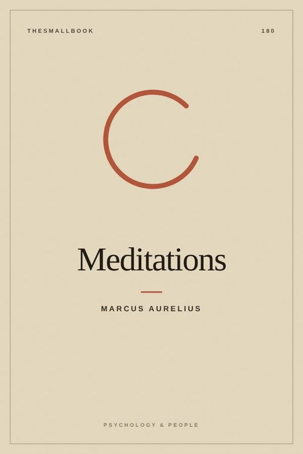

Library › Ask the Library › How do I control my anger?
How do I control my anger?
The short answer
Anger is usually fear or hurt wearing armor. Pause before you react, name what you're actually feeling, and respond, don't explode.
The books behind the answer

Meditations
Marcus Aurelius · 180 · 8 min · 6 lessons
You have power over your mind - not outside events. Realize this, and you will find strength.
- The Inner Citadel: Retreat Into Yourself: You have power over your mind, not outside events. Realize this, and you will find strength.

The Daily Stoic
Ryan Holiday & Stephen Hanselman · 2016 · 8 min · 6 lessons
One page of ancient wisdom per day: control what you can, accept what you can't, and turn every obstacle into curriculum.
- The Inner Citadel: Between stimulus and response is a space. In that space is your power, use the pause.

The Power of Now
Eckhart Tolle · 1997 · 8 min · 6 lessons
All negativity is caused by time-denial of the present. Anxiety lives in the future, regret in the past - life only ever happens now.
- The Pain-Body: Anger feeds on itself. Watch the emotion like a witness and it loses its grip.

Nonviolent Communication
Marshall B. Rosenberg · 2003 · 8 min · 6 lessons
Behind every criticism is an unmet need trying to speak. Learn the OFNR grammar - observe, feel, need, request - and watch arguments dissolve.
- Feelings Are Gauges; Needs Are the Engine: Under every anger is an unmet need. Say the need instead of the accusation.
A failure that proves it
Why did Chernobyl fail?
1986 · EGO · Loss: Uninhabitable zone, countless lives
Chernobyl's fatal test happened because frustrated operators forced it through. Never run critical moments on anger.
Cultures that punish bad news manufacture catastrophes, then are surprised by them. The truth was available at every step; the hierarchy just made it unspeakable. What you don't allow said, you'll eventually see exploded.
Questions people ask next
Can I read this in Hindi?
Yes. This answer is written in simple English. Open any linked book and choose Hindi or Hinglish to read the full lessons in your language, with audio where available.